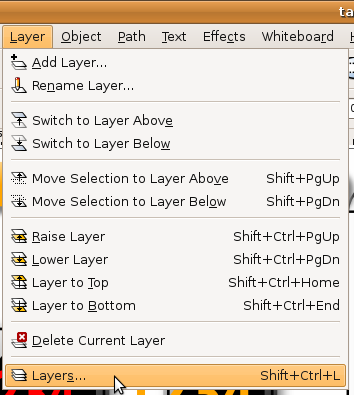
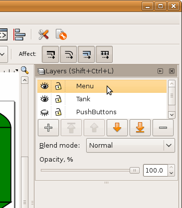
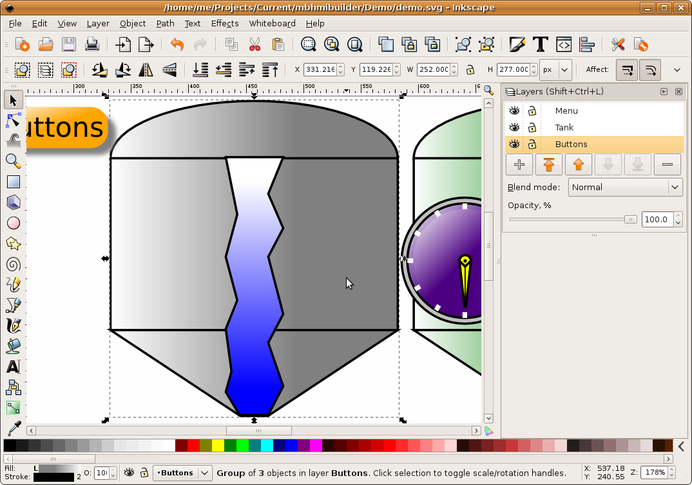
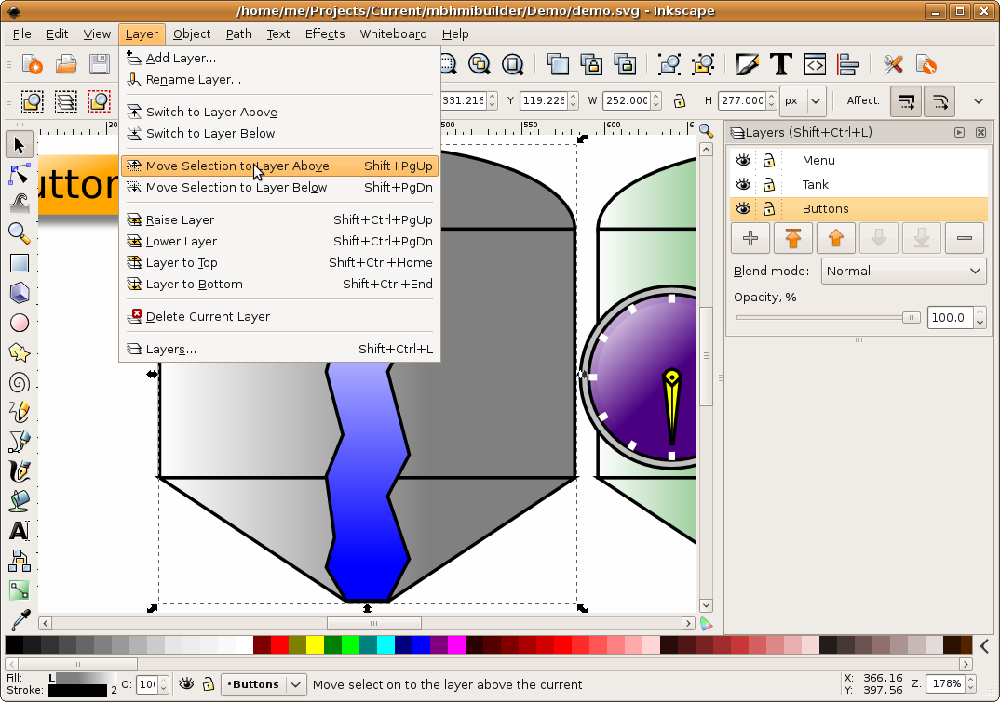
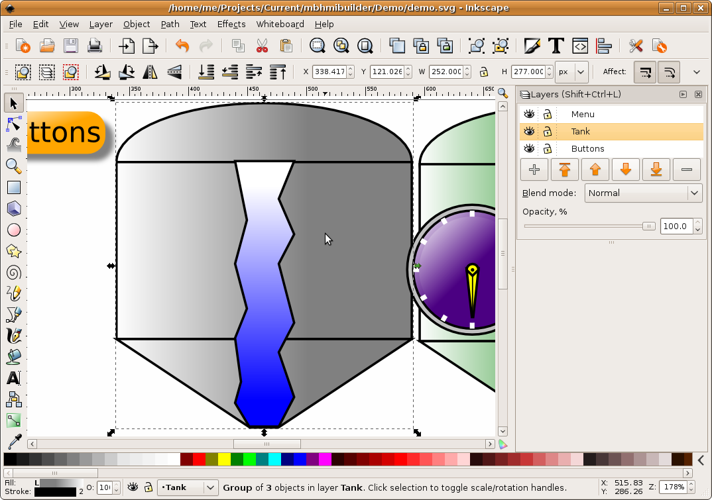

MBLogic
for an open world in automation
MBLogic
for an open world in automation
Working with Layers
Inkscape provides drawing "layers". These are very similar to CAD layers and can be used in a similar manner. The layers can be turned on and off to show or hide collections of graphics. Since layers can be controlled via web page scripting, they can also be used to control the display of different SVG "screens" by hiding or displaying different layers at different times. Any HMI application that requires more than a few display elements will need to use layers.
The Layers Menu in Inkscape
First, decide how many layers you will need. You can add more layers as you go if required. If you will be using multiple layers, you will need to add a layer dedicated to the layer selection controls. This will be referred to below as the "menu layer".
1) To access the "layers" features you will need to enable the layers menu.

2) The "layers" control menu will appear. Use the "+" button to add layers. Use the "-" button to remove layers. User the arrow keys to move layers up and down in the hierarchy. The "eye" symbols can be used to turn layers on and off. Turn on the layer that you wish to work on at this time. When you are done with the drawing, be sure to turn on the layer you wish to have visible by default. Also, if you have a menu layer, you should leave this turned on at all times.

3) Right click on the layer name and change it to something meaningful. The names used in the layers control menu however will only control the names used by Inkscape. The "id" properties of the layers will instead have abritrary names. The HMIBuilder program however will automatically change the "id" properties to match the layer name when you assemble the web page. This means you should *not* use the same name for a layer as you have used for the "id" of any other element, even though this does not cause an error when the drawing is in Inkscape.
Adding Clip-Art to Layers
Clip-art (graphics) can be added to a layer by simply dragging one of the provided files onto the drawing. When the file is dropped onto the drawing, the control device graphic should appear. The graphic can then be moved, rotated, re-sized, skewed, or changed in proportions as desired.
If the clip art file used one of the predefined template colour gradients, the colour will appear when the object is dropped on the drawing.
When adding clip-art to a layer, be sure to turn on the layer you are working on (and turn off the other layers), and also be sure to select the correct layer. If the current layer is turned off (hidden), the clip-art you add to the drawing will seem to "disappear". What is actually happening is the graphic is landing on a hidden layer and so drops out of sight.
Moving Objects Between Layers
You can move objects between layers:
1) Select the object. Note the current selection in the "layers" menu (at the upper right) indicates we have this in the "Buttons" layer instead of the "Tank" layer.

2) Select "Layer" and then "Move Selection to Layer Above" (or pick "below" if that was more appropriate).

3) The object will have moved to the selected layer, as shown by the "Layers" menu on the upper right. When moving objects between layers, the object stack relative to objects in the new layer may be affects. See the section on object stacking for details on how to correct this.
